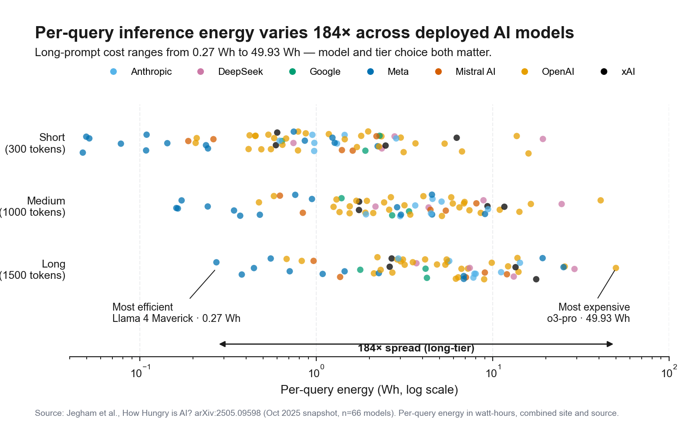
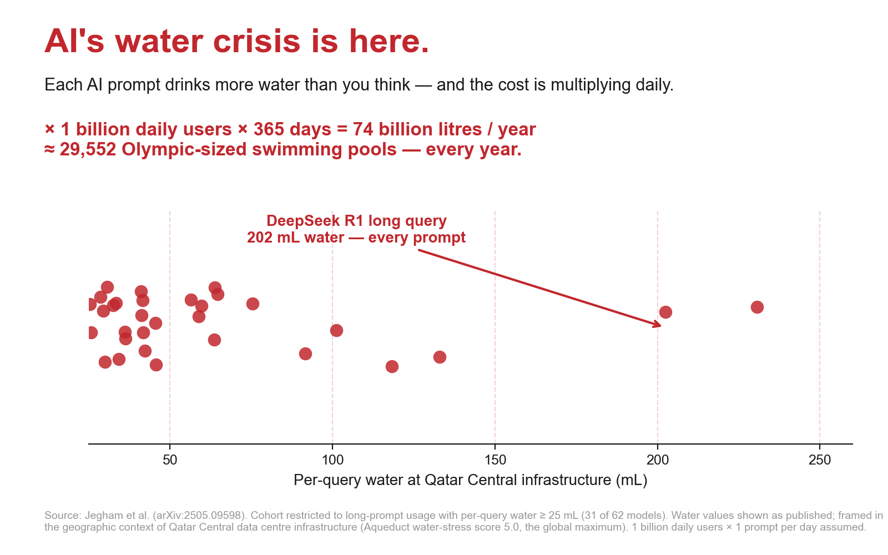

Energy
0.00 Wh
≈ —
Previous: —
Thirsty Machines · LUISS Data Visualisation 2026
Five public datasets, eight visualisations, one question.
Most coverage of AI's environmental cost reports aggregate figures — terawatt-hours per year, billions of litres of water — that are too large to feel. This project starts at the unit of one prompt and traces the cost upstream into electricity, water, and atmosphere, then re-aggregates deliberately. The intended reader uses generative AI tools regularly, has read a headline about its environmental footprint, and wants to know whether the concern is justified.
What follows is the per-prompt cost of running a frontier large language model — the GPT-class systems from OpenAI, Anthropic, Meta, and others. Pick a model, pick a prompt length, click Send: energy in watt-hours, water in millilitres, and carbon in grams of CO₂ tick up live, with everyday equivalences for each.
Typical long prompt
The pipeline visualises six stages in order: your device sending the prompt, the cellular-network connection that carries it, the internet backbone that routes it, the cloud data-centre region where the model runs, the electricity grid powering that region, and the resulting atmospheric carbon emissions.
Energy
0.00 Wh
≈ —
Previous: —
Water
0.00 mL
≈ —
Previous: —
Carbon
0.00 g CO₂
≈ —
Previous: —
Select a model and click Send to see how a prompt travels through the system.
Models do not all cost the same — and the next section ranks them.
Same data, two cuts. The dashboard below ranks frontier models by per-query energy within each query-length tier, where length is measured in tokens (the small chunks of text a model processes — roughly a short word or punctuation each). At the long tier (1500-token prompts, the kind of reasoning task a chatbot handles many times per day), per-query energy varies 184× across deployed models: from Llama 4 Maverick at 0.27 Wh up to o3-pro at 49.93 Wh. The ranking is stable at the extremes; the middle of the pack reshuffles as queries lengthen.
The first dashboard ranks models within a tier; the next traces how each individual model scales from short to long prompts. Where the ranking answers which models are most expensive, the line traces answer which models are most prompt-sensitive — the two questions don't always have the same answer.
The shape of each line is the diagnostic: a flat trace means the model is roughly insensitive to prompt length; a steep trace means cost grows fast with context.
Hyperscalers — the cloud providers running these models — route inference traffic (the model-running work triggered each time someone presses send) dynamically across regions and rarely disclose which physical facility served any single request. The map shows where the major cloud regions are located, not where any one query went. Toggle between two layers: grid carbon intensity (grams of CO₂ per kilowatt-hour generated, the lower the cleaner) from Ember 2025, and Aqueduct's baseline water-stress score on its 0–5 scale. Hong Kong and Singapore lack water-stress scores under Aqueduct's hydrological-basin methodology.
Below is the same query traced end-to-end. The Sankey starts with one user prompt — a typical long-form coding question sent to GPT-4o — and follows it through the cellular network, the cloud data centre, the regional electricity grid, and finally to the carbon emissions released into the atmosphere. Each transition shows what the prompt picks up along the way.
The derived figure (~0.73 g) sits 3.8% below Jegham's published 0.755 g because the integration uses Virginia's actual 2025 grid intensity (327 gCO₂/kWh from Ember) where Jegham assumed a static 0.34.
The per-query cost is small. The aggregate cost depends on how many prompts get sent. The dashboard below takes one selected model — defaulted to GPT-4o, the model that has served most consumer ChatGPT traffic — and projects its energy, water, and carbon footprint to one billion, fifty billion, and one hundred billion daily prompts. Use the dropdown to swap in a different model and see how the multiplier changes.
The everyday equivalences — household-years of electricity, Olympic swimming pools of water, transatlantic flights of CO₂ — aren't the analytical claim. They are a way to make the magnitudes legible.
The project's analytical focus is inference, but training compute is the necessary historical context. Training the largest models has scaled on a sustained log-linear trajectory in FLOP (floating-point operations, the unit of raw compute work). Only fifteen recent frontier-model releases publish verified training compute; the chart shows those.
Disclosure is uneven across the industry, and what cannot be measured cannot be charted.
Identical data, opposite framing, opposite conclusions. The two charts that follow are built from the same per-query inference numbers; the framing decisions diverge completely. The first reads honestly — full sample, log axis, neutral palette, attribution at title-level contrast. The second weaponises every legitimate-looking technique a non-pedant reader is unlikely to catch: cohort cuts, axis truncation, alarmist colour, and a geographic frame that imports a worst-case region's stress context onto data from regions that aren't that region.

Now the same data, framed differently:

The lesson is methodological. Neither chart is "the truth" in any complete sense; both are readings of the same underlying data. The reader's defence is recognising the moves — knowing what a cohort cut, an axis truncation, or a swap of geographic context look like — well enough to spot them before the conclusion lands.
At the long tier (1500-token prompts), Llama 4 Maverick uses 0.27 Wh per query; o3-pro uses 49.93 Wh. Same prompt, two orders of magnitude in cost.
Provider routing decisions and user-side model choice both have real environmental leverage — one o3-pro long-tier prompt is roughly equivalent to 184 Llama 4 Maverick prompts at the same length.
Virginia's 2025 grid intensity is 327 gCO₂/kWh against Washington's 124 — a 2.6× ratio at identical workload. Arizona's water-stress score, 4.39 on Aqueduct's 0–5 scale, is the highest in the United States.
Both statements are true. The reconciliation is a Jevons-paradox argument the project's report develops further.
Five public datasets feed the analysis. The Jegham per-query benchmark (How Hungry is AI?) gives per-query energy, water, and carbon for 66 frontier models across three query-length tiers. Epoch AI provides a 3,509-system database with training compute, parameters, and disclosed power draw. Ember publishes 2025 electricity grid carbon intensity at country and US-state granularity. The IM3 Open Source Data Center Atlas geocodes 1,479 US data-centre facilities. The WRI Aqueduct 4.0 publishes country and province-level baseline water stress on a 0–5 scale. All five sit under permissive licences (CC-BY 4.0 or ODbL).
Three known limitations bound the analytical claims. First, inference numbers are estimated, not measured: proprietary providers (OpenAI, Anthropic, Google) do not publish per-query energy directly, and Jegham's confidence intervals are wide. Second, water consumption is sometimes reported as on-site cooling water and sometimes as off-site thermoelectric water for grid generation; the headline figure can change by an order of magnitude depending on which the source uses. Third, geographic attribution is coarse — the map shows where cloud regions are, not where any specific query went.
We publish the full code, data preparation notebooks, and Tableau workbook sources at github.com/IIxoskeletonII/Thirsty-Machines.